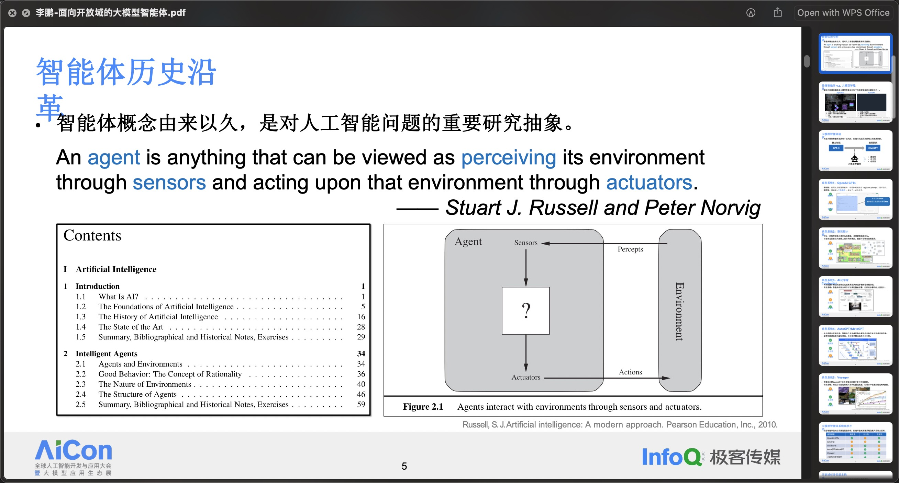

<!DOCTYPE html>
<html lang="en">
<head>
    <meta charset="utf-8" />
    <meta name="viewport" content="width=device-width, initial-scale=1.0, maximum-scale=1.0, user-scalable=no" />

    <title></title>
    <link rel="stylesheet" href="dist/reset.css">
    <link rel="stylesheet" href="dist/reveal.css" />
    <link rel="stylesheet" href="css/slides-extended.css" />
    <link rel="stylesheet" href="dist/theme/moon.css" id="theme" />
    <link rel="stylesheet" href="plugin/highlight/zenburn.css" />
    <link rel="stylesheet" href="plugin/customcontrols/style.css">


    <link rel="stylesheet" href="css/font.css" />
    <link rel="stylesheet" href="css/MoreHighlightStyle.css" />

    <script defer src="dist/fontawesome/all.min.js"></script>

    <script type="text/javascript">
        function pageInIframe() {
            return (window.location !== window.parent.location);
        }

        let forgetPop = true;
        function onPopState(event) {
            if(forgetPop){
                forgetPop = false;
            } else if( pageInIframe()) {
                parent.postMessage(event.target.location.href, "app://obsidian.md");
            }
        }
        window.onpopstate = onPopState;
        window.onmessage = event => {
            if(event.data == "reload"){
                window.document.location.reload();
            }
            forgetPop = true;
        }

        function fitElements() {
            const itemsToFit = document.getElementsByClassName('fitText');
            for (const item in itemsToFit) {
                if (Object.hasOwnProperty.call(itemsToFit, item)) {
                    const element = itemsToFit[item];
                    fitElement(element, 1, 1000);
                    element.classList.remove('fitText');
                }
            }
        }

        function fitElement(element, start, end) {

            let size = (end + start) / 2;
            element.style.fontSize = `${size}px`;

            if (Math.abs(start - end) < 1) {
                while (element.scrollHeight > element.offsetHeight) {
                    size--;
                    element.style.fontSize = `${size}px`;
                }
                return;
            }

            if (element.scrollHeight > element.offsetHeight) {
                fitElement(element, start, size);
            } else {
                fitElement(element, size, end);
            }
        }


        document.onreadystatechange = () => {
            fitElements();
            if (document.readyState === 'complete') {
                if (pageInIframe() && window.location.href.indexOf("?export") != -1){
                    parent.postMessage(event.target.location.href, "app://obsidian.md");
                }
                if (window.location.href.indexOf("print-pdf") != -1){
                    let stateCheck = setInterval(() => {
                        clearInterval(stateCheck);
                        window.print();
                    }, 250);
                }
            }
        };
    </script>
</head>

<body>
    <div class="reveal">
        <div class="slides"><section ><section data-markdown><script type="text/template"><!-- .slide: class="drop" data-background-gradient="linear-gradient(to right, #2C5364, #203A43, #0F2027)" data-background-opacity="1" data-background-image="img/简笔画-小人儿.svg" -->
<div class="" style="position: absolute; left: 0px; top: 0px; height: 800px; width: 1280px; min-height: 800px; display: flex; flex-direction: column; align-items: center; justify-content: center" absolute="true">

<style>
#title {
    background-color: rgba(255, 255, 255, 0.1);
    padding: 10px;
    border-radius: 8;
    border-color: rgba(32, 58, 67, 0.5);
    color: rgb(255, 255, 255);
    text-align: left;
    margin: auto;
    font-family: "Microsoft YaHei";
}

#subtitle {
	color:#e6fcf5;
	font-style: italic; /* 设置文本为斜体 */
	font-weight: bold; /* 设置文本为粗体 */
	font-family: "LXGW WenKai Screen", "Microsoft YaHei";
}

#date {
	font-family:'Nanum Pen Script'; 
	font-size:1.8em;
	color:#616161;
	vertical-align:top;
	font-weight:400;
}

</style>
<!-- CSS 设置结束 -->


<div class="" style="position: absolute; left: 0%; top: 30%; height: 40%; width: 100%; display: flex; flex-direction: column; align-items: center; justify-content: center" id="title">

<div class="block">

全球人工智能开发与应用大会 2024
</div>

<!-- .element: id="subtitle" -->

<div class="block">

# AICon 北京 2024
</div>


02 | _**技术进展跟踪**_ | InfoQ AICon


</div>

<div class="" style="position: absolute; left: 0%; top: 60%; height: 40%; width: 100%; display: flex; flex-direction: column; align-items: center; justify-content: center" id="date">

<div class="block">

<i class="fab fa-github" ></i>  @twotwo
2024-07
</div>


</div>
</div></script></section><section data-markdown><script type="text/template"><!-- .slide: class="drop" template="" -->
<div class="" style="position: absolute; left: 0px; top: 0px; height: 800px; width: 1280px; min-height: 800px; display: flex; flex-direction: column; align-items: center; justify-content: center" absolute="true">

# 内容设置

</div></script></section><section data-markdown><script type="text/template"><!-- .slide: class="drop" -->
<div class="" style="position: absolute; left: 0px; top: 0px; height: 800px; width: 1280px; min-height: 800px; display: flex; flex-direction: column; align-items: center; justify-content: center" absolute="true">

<style>
#outline {
	color:#e6fcf5;
	font-family: "LXGW WenKai Screen", "Microsoft YaHei";
}
</style>
<!-- CSS 设置结束 -->
<div class="" style="position: absolute; left: 0%; top: 5%; height: 10%; width: 100%; display: flex; flex-direction: column; align-items: flex-start; justify-content: space-evenly" align="left">


# 日程 5/17~5/18


</div>

<div class="has-light-background" style="background-color: rgba(132, 190, 240, 0.9); position: absolute; left: 0%; top: 0%; height: 100%; width: 25%; display: flex; flex-direction: column; align-items: center; justify-content: center" id="outline">

<div class="block">

### 主题演讲
1. [内容设置](#/0/2)
2. [中国AGI报告](#/1/2)
3. [贾扬清](#/1/5)
4. Triton 算子库
5. 亚马逊产品
</div>


</div>

<div class="has-light-background" style="background-color: rgba(111, 179, 238, 0.9); position: absolute; left: 25%; top: 0%; height: 100%; width: 25%; display: flex; flex-direction: column; align-items: center; justify-content: center" id="outline">

<div class="block">

### 专题论坛
1. <mark class="more-highlight red-highlighter">AI Agent</mark>
2. <mark class="more-highlight green-highlighter">多模态大模型</mark>
3. <mark class="more-highlight-half orange-highlighter">大模型基础设施</mark>
4. 行业创新
5. 推理优化
</div>


</div>

<div class="has-light-background" style="background-color: rgba(91, 168, 236, 0.9); position: absolute; left: 50%; top: 0%; height: 100%; width: 25%; display: flex; flex-direction: column; align-items: center; justify-content: center" id="outline">

<div class="block">

### 专题论坛
1. <mark class="more-highlight red-highlighter">AI Agent</mark>
2. AI 前沿探索
3. <mark class="more-highlight red-highlighter">RAG</mask>
4. 训练
5. LLMOps
</div>


</div>

<div class="has-light-background" style="background-color: rgba(70, 157, 233, 0.9); position: absolute; left: 75%; top: 0%; height: 100%; width: 25%; display: flex; flex-direction: column; align-items: center; justify-content: center" id="outline">

<div class="block">

### 专题论坛
1. 全球化
2. Copilot
3. <mark class="more-highlight red-highlighter">RAG</mask>
4. 行业创新
5. <!-- .element: style="font-size: 36px" -->
</div>


</div>
</div>

<aside class="notes"><p>1 个主论坛 + 11 个专题论坛
P8 大模型技能图谱</p>
</aside></script></section><section data-markdown><script type="text/template"><!-- .slide: class="drop" -->
<div class="" style="position: absolute; left: 0px; top: 0px; height: 800px; width: 1280px; min-height: 800px; display: flex; flex-direction: column; align-items: center; justify-content: center" absolute="true">

<style>
#outline {
	color:#e6fcf5;
	font-family: "LXGW WenKai Screen", "Microsoft YaHei";
}
.horizontal_dotted_line {
  border-bottom: 2px dotted gray;
}
</style>
<!-- CSS 设置结束
<div class="" style="position: absolute; left: 0%; top: 5%; height: 10%; width: 100%; display: flex; flex-direction: column; align-items: flex-start; justify-content: space-evenly" align="left">


## 收获总结 <i class="fas fa-book-reader" ></i>


</div>

<div class="" style="position: absolute; left: 0%; top: 0%; height: 100%; width: 25%; display: flex; flex-direction: column; align-items: center; justify-content: center" id="outline">

<div class="block">

<mark class="more-highlight orange-highlighter">趋势</mark>

中国 AGI 市场报告：四层结构
</div>


</div>

<div class="has-light-background" style="background-color: rgba(111, 179, 238, 0.9); position: absolute; left: 25%; top: 0%; height: 100%; width: 25%; display: flex; flex-direction: column; align-items: center; justify-content: center" id="outline">

<div class="block">

<mark class="more-highlight pink-highlighter">基础设施建设</mark>

可参考 Lepton Platform, Amazon Bedrock, Azure AI
</div>


</div>

<div class="has-light-background" style="background-color: rgba(91, 168, 236, 0.9); position: absolute; left: 50%; top: 0%; height: 100%; width: 25%; display: flex; flex-direction: column; align-items: center; justify-content: center" id="outline">

<div class="block">

<mark class="more-highlight green-highlighter">模型层</mark>

多模态大模型 [MiniCPM](https://github.com/OpenBMB/MiniCPM-V/)
</div>


<div class="block">

<mark class="more-highlight green-highlighter">模型层</mark>

多模态大模型 [MiniCPM](https://github.com/OpenBMB/MiniCPM-V/)
</div>


</div>

<div class="has-light-background" style="background-color: rgba(70, 157, 233, 0.9); position: absolute; left: 75%; top: 0%; height: 100%; width: 25%; display: flex; flex-direction: column; align-items: center; justify-content: center" id="outline">

<div class="block">

<mark class="more-highlight yellow-highlighter">中间层</mark>

RAG、Agent
</div>


<div class="block">

<mark class="more-highlight yellow-highlighter">中间层</mark>

RAG、Agent
</div>


</div>
 -->

<div class="" style="padding: 0 20px; box-sizing: border-box; position: absolute; left: 0%; top: 0%; height: 10%; width: 100%; display: flex; flex-direction: column; align-items: flex-start; justify-content: space-evenly" align="left">


## 收获总结 <i class="fas fa-book-reader" ></i>


</div>
<div class="horizontal_dotted_line" style="position: absolute; left: 3%; top: 11%; height: 0%; width: 94%; display: flex; flex-direction: column; align-items: center; justify-content: center" >

</div>

<div class="" style="border-radius: 15px; position: absolute; left: 0%; top: 15%; height: 75%; width: 48%; display: flex; flex-direction: column; align-items: center; justify-content: center" >
</div>
<div class="" style="position: absolute; left: 1%; top: 17%; height: 71%; width: 46%; display: flex; flex-direction: column; align-items: center; justify-content: center" >


</div>

<div class="" style="position: absolute; left: 36%; top: 15%; height: 19%; width: 63%; display: flex; flex-direction: column; align-items: flex-start; justify-content: space-evenly" align="left">

<div class="block">

<mark class="more-highlight orange-highlighter">趋势</mark>

中国 AGI 市场报告：四层结构
</div>


</div>
<div class="" style="position: absolute; left: 45%; top: 35%; height: 19%; width: 54%; display: flex; flex-direction: column; align-items: flex-start; justify-content: space-evenly" align="left">

<div class="block">

<mark class="more-highlight pink-highlighter">基础设施建设</mark>

可参考 Lepton Platform, Amazon Bedrock, Azure AI
</div>


</div>
<div class="" style="position: absolute; left: 45%; top: 55%; height: 19%; width: 54%; display: flex; flex-direction: column; align-items: flex-start; justify-content: space-evenly" align="left">

<div class="block">

<mark class="more-highlight green-highlighter">模型层</mark>

多模态大模型 [MiniCPM](https://github.com/OpenBMB/MiniCPM-V/)
</div>


</div>
<div class="" style="position: absolute; left: 40%; top: 75%; height: 19%; width: 44%; display: flex; flex-direction: column; align-items: flex-start; justify-content: space-evenly" align="left">

<div class="block">

<mark class="more-highlight yellow-highlighter">中间层</mark>

RAG、Agent
</div>


</div>


<!-- http://xhslink.com/xS1w1P -->
</div>

<aside class="notes"><p>趋势分析：四层结构</p>
<ol>
<li>基础设施层：算力、数据</li>
<li>模型层：LLM、多模态</li>
<li>中间层：微调、提示工程、RAG、Agent</li>
<li>应用层</li>
</ol>
</aside></script></section></section><section ><section data-markdown><script type="text/template"><!-- .slide: class="drop" template="" -->
<div class="" style="position: absolute; left: 0px; top: 0px; height: 800px; width: 1280px; min-height: 800px; display: flex; flex-direction: column; align-items: center; justify-content: center" absolute="true">

# 1. 主题演讲

[《中国 AGI 市场发展研究报告 2024》发布](https://aicon.infoq.cn/2024/beijing/presentation/5988) 姜昕蔚
- InfoQ /研究总监兼首席分析师

[从互联网到 AI：云产业的重构和演进](https://aicon.infoq.cn/2024/beijing/presentation/5932) 贾扬清
- Lepton AI /联合创始人 & CEO

[数势科技：基于AI Agent的数据分析与决策新趋势](https://aicon.infoq.cn/2024/beijing/presentation/5978) 黎科峰

[大模型背后的荆棘之路](https://aicon.infoq.cn/2024/beijing/presentation/5890) 林咏华

[Amazon AI：Explore the Strategy on Generative AI](https://aicon.infoq.cn/2024/beijing/presentation/5889) 曹志斌
</div>

<aside class="notes"></aside></script></section><section data-markdown><script type="text/template"><!-- .slide: class="drop" template="" -->
<div class="" style="position: absolute; left: 0px; top: 0px; height: 800px; width: 1280px; min-height: 800px; display: flex; flex-direction: column; align-items: center; justify-content: center" absolute="true">

## AIGC 人才能力地图


</div></script></section><section data-markdown><script type="text/template"><!-- .slide: class="drop" template="" -->
<div class="" style="position: absolute; left: 0px; top: 0px; height: 800px; width: 1280px; min-height: 800px; display: flex; flex-direction: column; align-items: center; justify-content: center" absolute="true">

## 中国 AGI 市场态势


</div></script></section><section data-markdown><script type="text/template"><!-- .slide: class="drop" template="" -->
<div class="" style="position: absolute; left: 0px; top: 0px; height: 800px; width: 1280px; min-height: 800px; display: flex; flex-direction: column; align-items: center; justify-content: center" absolute="true">

### AGI 市场四层结构


</div></script></section><section data-markdown><script type="text/template"><!-- .slide: class="drop" template="" -->
<div class="" style="position: absolute; left: 0px; top: 0px; height: 800px; width: 1280px; min-height: 800px; display: flex; flex-direction: column; align-items: center; justify-content: center" absolute="true">

### 教育行业 AGI 应用


</div></script></section><section data-markdown><script type="text/template"><!-- .slide: class="drop" template="" -->
<div class="" style="position: absolute; left: 0px; top: 0px; height: 800px; width: 1280px; min-height: 800px; display: flex; flex-direction: column; align-items: center; justify-content: center" absolute="true">

## 云产业重构和演进 by  贾扬清 Lepton AI

从互联网到 AI 的转变将推动云产业的重大变革。
</div></script></section><section data-markdown><script type="text/template"><!-- .slide: class="drop" template="" -->
<div class="" style="position: absolute; left: 0px; top: 0px; height: 800px; width: 1280px; min-height: 800px; display: flex; flex-direction: column; align-items: center; justify-content: center" absolute="true">

### AI is the 3rd pillar in IT Strategy


</div></script></section><section data-markdown><script type="text/template"><!-- .slide: class="drop" template="" -->
<div class="" style="position: absolute; left: 0px; top: 0px; height: 800px; width: 1280px; min-height: 800px; display: flex; flex-direction: column; align-items: center; justify-content: center" absolute="true">

### 预生成 Al 技术栈


</div></script></section><section data-markdown><script type="text/template"><!-- .slide: class="drop" template="" -->
<div class="" style="position: absolute; left: 0px; top: 0px; height: 800px; width: 1280px; min-height: 800px; display: flex; flex-direction: column; align-items: center; justify-content: center" absolute="true">

### Build the AI CLOUD

[Launching llama3 on lepton in less than 30 seconds](https://youtu.be/xvKDC2bXNws)
</div></script></section><section data-markdown><script type="text/template"><!-- .slide: class="drop" template="" -->
<div class="" style="position: absolute; left: 0px; top: 0px; height: 800px; width: 1280px; min-height: 800px; display: flex; flex-direction: column; align-items: center; justify-content: center" absolute="true">

### Lepton Platform: HPC +Modern Cloud


</div></script></section><section data-markdown><script type="text/template"><!-- .slide: class="drop" template="" -->
<div class="" style="position: absolute; left: 0px; top: 0px; height: 800px; width: 1280px; min-height: 800px; display: flex; flex-direction: column; align-items: center; justify-content: center" absolute="true">

## 大模型的荆棘之路

大模型的应用实践中存在着技术和实施上的挑战。
</div></script></section><section data-markdown><script type="text/template"><!-- .slide: class="drop" template="" -->
<div class="" style="position: absolute; left: 0px; top: 0px; height: 800px; width: 1280px; min-height: 800px; display: flex; flex-direction: column; align-items: center; justify-content: center" absolute="true">

### 全球通用大模型统计-24年4月


</div></script></section><section data-markdown><script type="text/template"><!-- .slide: class="drop" template="" -->
<div class="" style="position: absolute; left: 0px; top: 0px; height: 800px; width: 1280px; min-height: 800px; display: flex; flex-direction: column; align-items: center; justify-content: center" absolute="true">

### 芯片适配


</div></script></section><section data-markdown><script type="text/template"><!-- .slide: class="drop" template="" -->
<div class="" style="position: absolute; left: 0px; top: 0px; height: 800px; width: 1280px; min-height: 800px; display: flex; flex-direction: column; align-items: center; justify-content: center" absolute="true">

### 统一算子库及编译器


</div></script></section><section data-markdown><script type="text/template"><!-- .slide: class="drop" template="" -->
<div class="" style="position: absolute; left: 0px; top: 0px; height: 800px; width: 1280px; min-height: 800px; display: flex; flex-direction: column; align-items: center; justify-content: center" absolute="true">

## Explore the Strategy on Generative AI

曹志斌博士，亚马逊云科技 全球生成式 AI 产品营销总监

云产业在 AI 的背景下将继续重构和演进，从互联网到 AI 的转变将带来新的商业机遇和技术挑战
</div></script></section><section data-markdown><script type="text/template"><!-- .slide: class="drop" template="" -->
<div class="" style="position: absolute; left: 0px; top: 0px; height: 800px; width: 1280px; min-height: 800px; display: flex; flex-direction: column; align-items: center; justify-content: center" absolute="true">

### 如何选择基础模型


</div></script></section><section data-markdown><script type="text/template"><!-- .slide: class="drop" template="" -->
<div class="" style="position: absolute; left: 0px; top: 0px; height: 800px; width: 1280px; min-height: 800px; display: flex; flex-direction: column; align-items: center; justify-content: center" absolute="true">

### 基础设施服务


</div></script></section><section data-markdown><script type="text/template"><!-- .slide: class="drop" template="" -->
<div class="" style="position: absolute; left: 0px; top: 0px; height: 800px; width: 1280px; min-height: 800px; display: flex; flex-direction: column; align-items: center; justify-content: center" absolute="true">

### 重塑工作方式


</div></script></section></section><section ><section data-markdown><script type="text/template"><!-- .slide: class="drop" template="" -->
<div class="" style="position: absolute; left: 0px; top: 0px; height: 800px; width: 1280px; min-height: 800px; display: flex; flex-direction: column; align-items: center; justify-content: center" absolute="true">

# 2. LLM-基础设施层

[网络驱动大规模 AI 训练 - 阿里云可预期网络 HPN 7.0 架构](https://aicon.infoq.cn/2024/beijing/presentation/5881) 席永青
- 阿里巴巴 /资深网络架构师

[GLake: 高效透明的大模型显存管理和优化](https://aicon.infoq.cn/2024/beijing/presentation/5855) 赵军平
- 蚂蚁集团 /基础智能-AI Infra 异构计算负责人

[昇腾大模型推理最佳实践](https://new.qq.com/rain/a/20240604A04YL800) 王建辉
- 华为 /昇腾计算首席架构师

[混合场景下大规模 GPU 集群构建与实践](https://aicon.infoq.cn/2024/beijing/presentation/5947) 星龙
- MiniMax / 基础设施负责人
</div>

<aside class="notes"><p><a href="https://aicon.infoq.cn/2024/beijing/track/1675">大模型基础设施</a> 深入探讨大模型基础设施的构建，包括硬件配置、数据管理、网络架构、软件工具以及成本效益优化。</p>
<ul>
<li><strong>网络驱动的大规模 AI 训练</strong>：席永青提出了 AI 训练场景的算力 Scaling 核心是网络，并介绍了阿里云 HPN 7.0 架构系统，以及它对于算力规模扩展的作用。</li>
<li><strong>显存管理与优化的关键性</strong>：赵军平分享了 GLake，一种无缝接入 PyTorch 框架的显存优化方案，它可以显著减少显存碎片，并提高训练吞吐。</li>
<li><strong>大模型推理技术的核心关键</strong>：王建辉介绍了昇腾在大模型推理方向的技术探索，以及如何在不断提升用户体验的基础上降低推理成本。</li>
<li><strong>跨硬件基础设施的构建</strong>：崔慧敏讨论了如何通过统一的编程模型和跨架构编译优化技术，构建兼容多种加速卡的大模型基础设施。<a href="https://aicon.infoq.cn/2024/beijing/presentation/5730">构建兼容多元加速卡的大模型基础设施</a></li>
<li><strong>大规模 GPU 集群的构建与实践</strong>：星龙探讨了当前预训练模型对基础设施的压力，以及如何通过全链路优化和混合云的方式来构建高性能训练集群。</li>
</ul>
</aside></script></section><section data-markdown><script type="text/template"><!-- .slide: class="drop" template="" -->
<div class="" style="position: absolute; left: 0px; top: 0px; height: 800px; width: 1280px; min-height: 800px; display: flex; flex-direction: column; align-items: center; justify-content: center" absolute="true">

## 阿里云 高性能智算网络（HPN）7.0

<mark class="more-highlight-half green-highlighter">传统网络集群设计不再适用 AI 训练</mark>

- 互联拓扑差异大
- 流量模型的网络诉求差异大
- 连接数差异大

<mark class="more-highlight-half green-highlighter">AI 集群高性能网络系统关键要求</mark>

- 高效的带宽利用
- 均匀的网络 HASH
- 有效的流控机制

<mark class="more-highlight-half green-highlighter">AI 基础设施网络架构</mark>

- 模块化架构标准UNP
</div></script></section><section data-markdown><script type="text/template"><!-- .slide: class="drop" template="" -->
<div class="" style="position: absolute; left: 0px; top: 0px; height: 800px; width: 1280px; min-height: 800px; display: flex; flex-direction: column; align-items: center; justify-content: center" absolute="true">

## GLake

赵军平在文章中详细剖析了 GLake 系统，这一创新的解决方案专为大模型时代设计，通过虚拟内存管理和全局池化技术，有效提升了显存和传输资源的管理效率与性能，尤其在处理大型语言模型（LLMs）的训练与推理过程中展现出色。

LLM 技术挑战：显存墙、传输墙

https://github.com/intelligent-machine-learning/glake
</div></script></section></section><section ><section data-markdown><script type="text/template"><!-- .slide: class="drop" template="" -->
<div class="" style="position: absolute; left: 0px; top: 0px; height: 800px; width: 1280px; min-height: 800px; display: flex; flex-direction: column; align-items: center; justify-content: center" absolute="true">

# 3. 多模态-模型层

[声音基础模型如何推动声音理解和生成](https://aicon.infoq.cn/2024/beijing/presentation/5757) 王育军
- 小米 /语音技术负责人

[迈向实用化多模态大模型](https://aicon.infoq.cn/2024/beijing/presentation/5980) 姚远
- 面壁智能 /研究员 & 清华大学计算机系博士后

[多模态大模型在金融行业的实践和展望](https://aicon.infoq.cn/2024/beijing/presentation/5931) 周思霁
- 火山引擎 /金融解决方案总监 & 金融大模型负责人
</div>

<aside class="notes"><p><a href="https://aicon.infoq.cn/2024/beijing/track/1669">多模态大模型技术与应用</a></p>
<ol>
<li>小米的王育军：声音基础模型如何推动声音理解和生成的最新进展</li>
<li>面壁智能的姚远（清华大学博士后）：多模态大模型迈向实用化的挑战与解决方案，并介绍其构建的高效端侧多模态大模型系列 <strong>MiniCPM</strong>-V 2.0</li>
<li>火山引擎的周思霁：多模态大模型在金融行业的应用现状和发展趋势，以及其对行业创新和发展的推动作用</li>
<li>快手的李岩：快手自研的「可图」文生图大模型，并分享其在快手 APP 的应用实践和效果收益。</li>
</ol>
</aside></script></section><section data-markdown><script type="text/template"><!-- .slide: class="drop" template="" -->
<div class="" style="position: absolute; left: 0px; top: 0px; height: 800px; width: 1280px; min-height: 800px; display: flex; flex-direction: column; align-items: center; justify-content: center" absolute="true">

## 多模态大模型迈向实用

<mark class="more-highlight-half green-highlighter">痛点问题</mark>

- 参数多，成本高
- 幻觉多，难置信

<mark class="more-highlight-half pink-highlighter">MiniCPM-V</mark>

- 面向图文理解的端侧多模态大模型系列
- https://github.com/OpenBMB/MiniCPM-V/
</div></script></section></section><section ><section data-markdown><script type="text/template"><!-- .slide: class="drop" template="" -->
<div class="" style="position: absolute; left: 0px; top: 0px; height: 800px; width: 1280px; min-height: 800px; display: flex; flex-direction: column; align-items: center; justify-content: center" absolute="true">

# 4. Agent-中间层

[利用 SLM 结合边缘设备构建 AIoT Agent](https://aicon.infoq.cn/2024/beijing/presentation/5945) 卢建晖
- 微软 /高级云技术布道师

[面向开放域的大模型智能体](https://aicon.infoq.cn/2024/beijing/presentation/5771) 李鹏
- 清华大学 /智能产业研究院 副研究员/副教授

[AI Agent 在企业生产中的技术实践](https://aicon.infoq.cn/2024/beijing/presentation/5877) 陈星亮
- 华为云 /aPaaS 首席架构师

[零售连锁行业内智能分析 AI Agent 的应用探索](https://aicon.infoq.cn/2024/beijing/presentation/5986) 岑润哲
- 数势科技 /数据智能产品总经理
</div>

<aside class="notes"><p><a href="https://aicon.infoq.cn/2024/beijing/track/1656">AI Agent 探索与实践</a></p>
</aside></script></section><section data-markdown><script type="text/template"><!-- .slide: class="drop" template="" -->
<div class="" style="position: absolute; left: 0px; top: 0px; height: 800px; width: 1280px; min-height: 800px; display: flex; flex-direction: column; align-items: center; justify-content: center" absolute="true">

## Azure AI Infrastructure


</div></script></section><section data-markdown><script type="text/template"><!-- .slide: class="drop" template="" -->
<div class="" style="position: absolute; left: 0px; top: 0px; height: 800px; width: 1280px; min-height: 800px; display: flex; flex-direction: column; align-items: center; justify-content: center" absolute="true">

## 智能体的概念


</div>

<aside class="notes"><p>An agent is anything that can be viewed as perceiving its environment through sensors and acting upon that environment through actuators.
—— Stuart J. Russell and Peter Norvig</p>
</aside></script></section><section data-markdown><script type="text/template"><!-- .slide: class="drop" template="" -->
<div class="" style="position: absolute; left: 0px; top: 0px; height: 800px; width: 1280px; min-height: 800px; display: flex; flex-direction: column; align-items: center; justify-content: center" absolute="true">

### Agent 概述


</div>

<aside class="notes"><p>lilianweng.github.io/posts/2023-06-23-agent</p>
</aside></script></section><section data-markdown><script type="text/template"><!-- .slide: class="drop" template="" -->
<div class="" style="position: absolute; left: 0px; top: 0px; height: 800px; width: 1280px; min-height: 800px; display: flex; flex-direction: column; align-items: center; justify-content: center" absolute="true">

## 人机协作


</div></script></section></section><section ><section data-markdown><script type="text/template"><!-- .slide: class="drop" template="" -->
<div class="" style="position: absolute; left: 0px; top: 0px; height: 800px; width: 1280px; min-height: 800px; display: flex; flex-direction: column; align-items: center; justify-content: center" absolute="true">

# 5. RAG-中间层

[智谱 RAG 技术的探索与实践](https://aicon.infoq.cn/2024/beijing/presentation/5779) 柴思远 ⭐️
- 智谱 /企业商业技术中心的总经理

[vivo 一站式 AI 智能体构建平台演进实践](https://aicon.infoq.cn/2024/beijing/presentation/5797) 张硕 ⭐️
- vivo /互联网产品平台 架构团队负责人

[Jina AI - RAG 系统中的关键技术：从 Embedding 到 Reranker](https://aicon.infoq.cn/2024/beijing/presentation/5989) 王峰 ⭐️

[阿里巴巴 OpenSearch RAG 应用实践](https://aicon.infoq.cn/2024/beijing/presentation/5762) 邢少敏

[月之暗面 Long-Context vs RAG：谁将主导未来？](https://aicon.infoq.cn/2024/beijing/presentation/5801) 唐飞虎
</div>

<aside class="notes"><p><a href="https://aicon.infoq.cn/2024/beijing/track/1657">RAG 检索与生成落地实践</a></p>
</aside></script></section><section data-markdown><script type="text/template"><!-- .slide: class="drop" template="" -->
<div class="" style="position: absolute; left: 0px; top: 0px; height: 800px; width: 1280px; min-height: 800px; display: flex; flex-direction: column; align-items: center; justify-content: center" absolute="true">

## RAG 是什么？ 


</div></script></section><section data-markdown><script type="text/template"><!-- .slide: class="drop" template="" -->
<div class="" style="position: absolute; left: 0px; top: 0px; height: 800px; width: 1280px; min-height: 800px; display: flex; flex-direction: column; align-items: center; justify-content: center" absolute="true">

## 智谱 RAG 方案


</div></script></section><section data-markdown><script type="text/template"><!-- .slide: class="drop" template="" -->
<div class="" style="position: absolute; left: 0px; top: 0px; height: 800px; width: 1280px; min-height: 800px; display: flex; flex-direction: column; align-items: center; justify-content: center" absolute="true">

## Moonshot RAG

- RAG 全称 Retrieval-Augmented Generation，即检索增强生成，它 结合了检索和生成的能力，为文本序列生成任务引入外部知识。
    
- 目前，大部分公司倾向于使用 RAG 方法进行信息检索，因为相比长 文本的使用成本，使用向量数据库的成本更低。
    
- 而在 RAG 应用过程中，一些公司会使用微调的 Embedding Model， 以增强 RAG 的检索能力;另一些些公司会选择使用知识图谱或者 ES 等非向量数据库的 RAG 方法。
    
- 大多数第三方个人和企业开发者会使用集成好的 RAG 框架(例如 llamaindex、langchain、etcs)
    
- 或者直接使用 LLMOps 里内建的 RAG 工具。
</div></script></section><section data-markdown><script type="text/template"><!-- .slide: class="drop" template="" -->
<div class="" style="position: absolute; left: 0px; top: 0px; height: 800px; width: 1280px; min-height: 800px; display: flex; flex-direction: column; align-items: center; justify-content: center" absolute="true">

## RAG 优缺点


</div></script></section><section data-markdown><script type="text/template"><!-- .slide: class="drop" template="" -->
<div class="" style="position: absolute; left: 0px; top: 0px; height: 800px; width: 1280px; min-height: 800px; display: flex; flex-direction: column; align-items: center; justify-content: center" absolute="true">

### RAG for Image


</div></script></section><section data-markdown><script type="text/template"><!-- .slide: class="drop" template="" -->
<div class="" style="position: absolute; left: 0px; top: 0px; height: 800px; width: 1280px; min-height: 800px; display: flex; flex-direction: column; align-items: center; justify-content: center" absolute="true">

## 自动泛化(Prompt)


</div></script></section><section data-markdown><script type="text/template"><!-- .slide: class="drop" template="" -->
<div class="" style="position: absolute; left: 0px; top: 0px; height: 800px; width: 1280px; min-height: 800px; display: flex; flex-direction: column; align-items: center; justify-content: center" absolute="true">

## 2023 Gen AI Timeline Visualization


</div></script></section><section data-markdown><script type="text/template"><!-- .slide: class="drop" template="" -->
<div class="" style="position: absolute; left: 0px; top: 0px; height: 800px; width: 1280px; min-height: 800px; display: flex; flex-direction: column; align-items: center; justify-content: center" absolute="true">

## 技术选择 RAG vs SFT ?


</div>

<aside class="notes"><p>Retrieval-Augmented Generation 是一种结合了信息检索和文本生成的技术，它利用检索到的信息来增强生成模型的能力。</p>
<p>Supervised Fine-Tuning 是一种监督式学习方法，通常在预训练模型的基础上，使用特定任务的标注数据集进行微调。</p>
</aside></script></section><section data-markdown><script type="text/template"><!-- .slide: class="drop" template="" -->
<div class="" style="position: absolute; left: 0px; top: 0px; height: 800px; width: 1280px; min-height: 800px; display: flex; flex-direction: column; align-items: center; justify-content: center" absolute="true">

## Advanced RAG


</div></script></section><section data-markdown><script type="text/template"><!-- .slide: class="drop" template="" -->
<div class="" style="position: absolute; left: 0px; top: 0px; height: 800px; width: 1280px; min-height: 800px; display: flex; flex-direction: column; align-items: center; justify-content: center" absolute="true">

## RAG Evaluation


</div></script></section><section data-markdown><script type="text/template"><!-- .slide: class="drop" template="" -->
<div class="" style="position: absolute; left: 0px; top: 0px; height: 800px; width: 1280px; min-height: 800px; display: flex; flex-direction: column; align-items: center; justify-content: center" absolute="true">

## Workflow + Multiple Agents


</div></script></section><section data-markdown><script type="text/template"><!-- .slide: class="drop" template="" -->
<div class="" style="position: absolute; left: 0px; top: 0px; height: 800px; width: 1280px; min-height: 800px; display: flex; flex-direction: column; align-items: center; justify-content: center" absolute="true">

## [RAG 4 LLM: A Survey](https://arxiv.org/pdf/2312.10997)

一篇综述论文，主要探讨了大型语言模型（LLMs）中的检索增强生成（RAG）技术，包括其发展历程、核心技术、评估方法以及面临的挑战和未来研究方向。

[RAG-Survey](https://github.com/Tongji-KGLLM/RAG-Survey) 大型语言模型中的检索增强生成（RAG）技术的综述，包括其技术发展、应用场景、评估方法以及未来的发展趋势和挑战
</div></script></section><section data-markdown><script type="text/template"><!-- .slide: class="drop" template="" -->
<div class="" style="position: absolute; left: 0px; top: 0px; height: 800px; width: 1280px; min-height: 800px; display: flex; flex-direction: column; align-items: center; justify-content: center" absolute="true">


</div></script></section><section data-markdown><script type="text/template"><!-- .slide: class="drop" template="" -->
<div class="" style="position: absolute; left: 0px; top: 0px; height: 800px; width: 1280px; min-height: 800px; display: flex; flex-direction: column; align-items: center; justify-content: center" absolute="true">

## 阿里云 OpenSearch RAG


</div></script></section></section><section ><section data-markdown><script type="text/template"><!-- .slide: class="drop" template="" -->
<div class="" style="position: absolute; left: 0px; top: 0px; height: 800px; width: 1280px; min-height: 800px; display: flex; flex-direction: column; align-items: center; justify-content: center" absolute="true">

# Reference


- 

<div class="footnotes" role="doc-endnotes">
<ol>
<li id="fn:schedule" role="doc-endnote" class="footnote"><p>

https://aicon.infoq.cn/2024/beijing/schedule

</p></li><li id="fn:keynote" role="doc-endnote" class="footnote"><p>

https://aicon.infoq.cn/2024/beijing/track

</p></li></ol>
</div>
</div></script></section><section data-markdown><script type="text/template"><!-- .slide: class="drop" data-background-gradient="radial-gradient(circle at top right, #2C5364, #203A43, #0F2027)" data-background-opacity="0.2" -->
<div class="" style="position: absolute; left: 0px; top: 0px; height: 800px; width: 1280px; min-height: 800px; display: flex; flex-direction: column; align-items: center; justify-content: center" absolute="true">

<div class="" style="padding: 5; box-sizing: border-box; position: absolute; left: 50%; top: 0%; height: 100%; width: 50%; display: flex; flex-direction: column; align-items: center; justify-content: center" >


</div>

<div class="" style="position: absolute; left: 0%; top: 0%; height: 100%; width: 80%; display: flex; flex-direction: column; align-items: center; justify-content: center" >

</img>

## 感谢您的观看！

不要忘了一键三连噢～🩷 ⭐️ 📝
</div>
</div>

<aside class="notes"><ol>
<li>还有更多内容，请关注 all in obsidian 账号后查看；</li>
<li>喜欢这篇笔记，请点赞、收藏、评论 三连；</li>
<li>感谢您的观看！</li>
</ol>
</aside></script></section></section></div>
    </div>

    <script src="dist/reveal.js"></script>
    <script src="plugin/notes/notes.js"></script>
    <script src="plugin/markdown/markdown.js"></script>
    <script src="plugin/highlight/highlight.js"></script>

    <script src="plugin/zoom/zoom.js"></script>
    <script src="plugin/math/math.js"></script>
    <script src="plugin/mermaid/mermaid.js"></script>
    <script src="plugin/chart/chart.min.js"></script>
    <script src="plugin/chart/plugin.js"></script>
    <script src="plugin/customcontrols/plugin.js"></script>

    <script>
        function extend() {
            const target = {};
            for (let i = 0; i < arguments.length; i++) {
                const source = arguments[i];
                for (const key in source) {
                    if (source.hasOwnProperty(key)) {
                        target[key] = source[key];
                    }
                }
            }
            return target;
        }

        function isLight(color) {
            let hex = color.replace('#', '');

            // convert #fff => #ffffff
            if (hex.length == 3) {
                hex = `${hex[0]}${hex[0]}${hex[1]}${hex[1]}${hex[2]}${hex[2]}`;
            }

            const c_r = parseInt(hex.substr(0, 2), 16);
            const c_g = parseInt(hex.substr(2, 2), 16);
            const c_b = parseInt(hex.substr(4, 2), 16);
            const brightness = ((c_r * 299) + (c_g * 587) + (c_b * 114)) / 1000;
            return brightness > 155;
        }

        const bgColor = getComputedStyle(document.documentElement).getPropertyValue('--r-background-color').trim();

        if (isLight(bgColor)) {
            document.body.classList.add('has-light-background');
        } else {
            document.body.classList.add('has-dark-background');
        }

        // default options to init reveal.js
        const defaultOptions = {
            controls: true,
            progress: true,
            history: true,
            center: true,
            transition: 'default', // none/fade/slide/convex/concave/zoom
            plugins: [
                RevealMarkdown,
                RevealHighlight,
                RevealZoom,
                RevealNotes,
                RevealMath.MathJax3,
                RevealMermaid,
                RevealChart,
                RevealCustomControls,
            ],
            allottedTime: 120 * 1000,
            mathjax3: {
                mathjax: 'plugin/math/mathjax/tex-mml-chtml.js',
            },
            markdown: {
                gfm: true,
                mangle: true,
                pedantic: false,
                smartLists: false,
                smartypants: false,
            },
            mermaid: {
                theme: isLight ? 'default' : 'dark',
            },
            customcontrols: {
                controls: [
                ]
            },
        };

        if ( pageInIframe() ) {
            defaultOptions.scrollActivationWidth = 5;
        }

        // options from URL query string
        const queryOptions = Reveal().getQueryHash() || {};

        const options = extend(defaultOptions, {"controls":true,"progress":false,"slideNumber":true,"center":true,"transition":"slide","transitionSpeed":"normal","width":1280,"height":800,"margin":0.04,"controlsLayout":"edges","loop":false,"showNotes":false}, queryOptions);
    </script>

    <script>
      Reveal.initialize(options);
    </script>
</body>

<!-- created with Slides Extended -->
</html>
